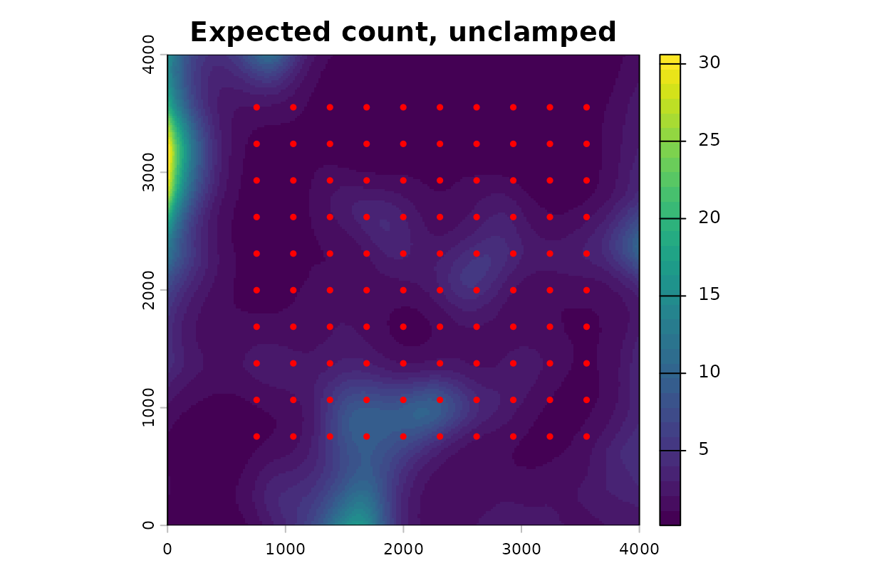
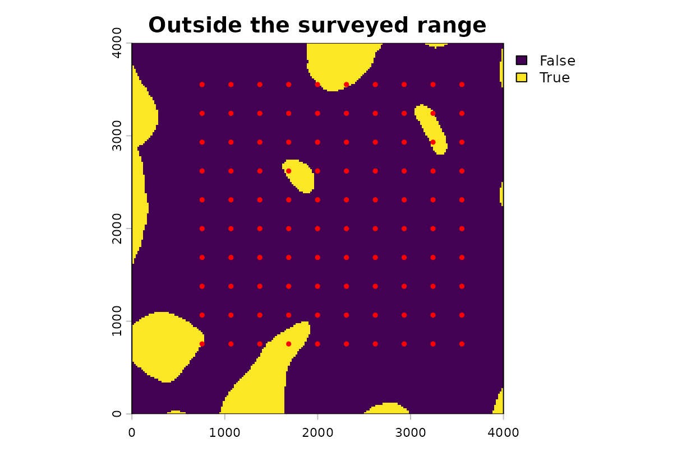
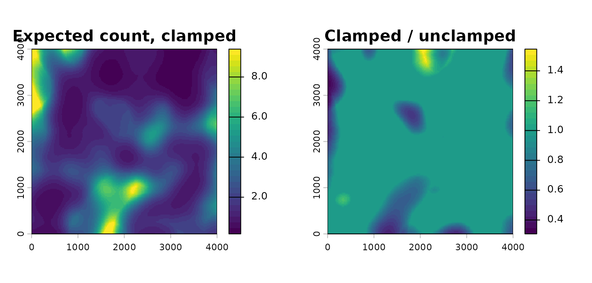

03. Mapping Predictions and Limiting Extrapolation
Bill Peterman
Source:vignettes/v03-map-predictions.Rmd
v03-map-predictions.RmdWhat this vignette covers
A fitted model becomes a map when you apply it to every cell of a raster. Many of those cells hold landscape conditions that no survey point sampled. There the model extrapolates, or predicts beyond the data used to fit it. This vignette answers two questions. Where on your map is the model extrapolating, and what can you do about it?
You will project the Quick Start model across its landscape with
kernel_scale.raster() and terra::predict(),
then map the cells that fall outside the surveyed conditions. The last
step is clamping, which replaces any covariate value beyond a chosen
limit with the limit itself. Read
vignette("v01-quickstart", package = "multiScaleR") first,
because this vignette starts from that fitted model.
Project the fitted model
Fit the model
The example uses the counts at 100 survey points and the three landscape layers from the Quick Start.
data("landscape_counts") # counts and one site-level covariate
data("surv_pts") # survey locations
pts <- vect(surv_pts) # convert to a terra SpatVector
# Three landscape layers on one grid, in meters
land_rast <- rast(system.file("extdata", "landscape.tif",
package = "multiScaleR"))
# bin = TRUE stores the distance-binned summaries the fast backend needs
inputs <- kernel_prep(pts = pts, raster_stack = land_rast, max_D = 1700,
kernel = "gaussian", bin = TRUE, verbose = FALSE)
df <- data.frame(landscape_counts, inputs$kernel_dat)
start <- glm(counts ~ site + land1 + land2, family = poisson(), data = df)
# Estimate the scales of effect and the coefficients
fit <- multiScale_optim(start, inputs, backend = "profile_glm",
n_cores = 1, verbose = FALSE)
round(fit$scale_est) # sigma and its standard error, in meters
#> Mean SE
#> land1 238 33
#> land2 500 47The profile_glm backend keeps this vignette fast. A
model fitted with the default backend projects in exactly the same
way.
Apply the fitted kernels to the raster
kernel_scale.raster() smooths each landscape layer with
its fitted kernel, so every cell holds the value a survey point at that
location would have received. With scale_center = TRUE it
then standardizes each layer with the mean and standard deviation from
the survey points. The model was fitted to standardized covariates, and
it needs the raster on that same scale.
r_unclamped <- kernel_scale.raster(
raster_stack = land_rast,
multiScaleR = fit, # supplies the fitted kernels and the scaling
scale_center = TRUE, # standardize as the model data were standardized
clamp = FALSE, # leave every value as computed
verbose = FALSE
)
r_unclamped
#> class : SpatRaster
#> size : 200, 200, 3 (nrow, ncol, nlyr)
#> resolution : 20, 20 (x, y)
#> extent : 0, 4000, 0, 4000 (xmin, xmax, ymin, ymax)
#> coord. ref. :
#> source(s) : memory
#> varnames : landscape
#> landscape
#> landscape
#> names : land1, land2, site
#> min values : -4.013304, -3.197253, -0
#> max values : 3.470949, 3.031827, -0How to read the output: The result has one layer per
model covariate. land1 and land2 are in
standard deviation units of the survey data, so zero is the average
survey point and a value of 2 is two standard deviations above it.
land3 is absent because the model does not use it. The
site layer is a placeholder. site was measured
at the survey points and has no raster, so the function fills a layer
with zeros, which is the mean of site in these data. To map
a different value, pass it through site_values, for example
site_values = list(site = 1).
Predict the expected count
# Expected count in every raster cell
pred_unclamped <- terra::predict(r_unclamped, fit$opt_mod, type = "response")
plot(pred_unclamped, main = "Expected count, unclamped")
points(pts, pch = 19, cex = 0.5, col = "red")
Expected count from the unclamped projection, with survey points.
# Largest expected count on the map and at the survey points
c(map = minmax(pred_unclamped)[2], survey_points = max(fitted(fit$opt_mod)))
#> map survey_points
#> 30.602440 8.759543How to read this map: Each cell shows the count the
model expects from one survey at that location, at an average value of
site. The largest expected count at any survey point is
8.8. The map reaches 30.6, which is 3.5 times higher. No survey supports
a count that large. The model produced it by extending its fitted trend
into conditions it never saw.
Find where the map extrapolates
A cell is an extrapolation when its covariate value lies outside the range of values at the survey points. Compare the two ranges directly.
covs <- c("land1", "land2")
# Range of each covariate at the survey points (row 1 = min, row 2 = max)
lim <- sapply(fit$opt_mod$model[covs], range)
# Range of each covariate across the whole raster
full <- minmax(r_unclamped[[covs]])
range_tab <- data.frame(
covariate = covs,
survey_min = lim[1, ], survey_max = lim[2, ],
raster_min = full[1, ], raster_max = full[2, ]
)
knitr::kable(range_tab, digits = 2, row.names = FALSE)| covariate | survey_min | survey_max | raster_min | raster_max |
|---|---|---|---|---|
| land1 | -2.70 | 2.08 | -4.01 | 3.47 |
| land2 | -2.42 | 2.19 | -3.20 | 3.03 |
# TRUE where a covariate is below the survey minimum or above the maximum
out_land1 <- r_unclamped$land1 < lim[1, "land1"] |
r_unclamped$land1 > lim[2, "land1"]
out_land2 <- r_unclamped$land2 < lim[1, "land2"] |
r_unclamped$land2 > lim[2, "land2"]
outside <- out_land1 | out_land2
plot(outside, main = "Outside the surveyed range")
points(pts, pch = 19, cex = 0.5, col = "red")
Cells where at least one covariate lies outside the range at the survey points (yellow), with survey points.
# Percent of cells outside the range: either covariate, then each one
pct_out <- 100 * global(c(outside, out_land1, out_land2), "mean")[, 1]
names(pct_out) <- c("either", "land1", "land2")
round(pct_out, 1)
#> either land1 land2
#> 11.2 5.4 5.9How to read the table and map: At the survey points,
land1 spans -2.70 to 2.08 standard deviation units. Across
the raster it spans -4.01 to 3.47, so some cells have less habitat
around them than any survey point did, and others have more.
land2 shows the same pattern. The yellow cells make up 11%
of the map. Every prediction there is an extrapolation, and the survey
data cannot tell you whether it is right. Most of the yellow area lies
along the map border, beyond the outermost survey points. A few patches
sit among the survey points, so a grid that surrounds an area has not
necessarily sampled its conditions.
What this means for your study. Extrapolation compounds under a log link. In this Poisson model each additional standard deviation of
land2multiplies the expected count by 1.87, and the multiplication continues past the last survey point. Map the cells outside the surveyed range before you interpret any projected surface.
Clamp the covariates to the surveyed range
Clamping acts on the standardized covariate layers before prediction.
With clamp = TRUE, a cell below the survey minimum is set
to that minimum and a cell above the survey maximum is set to that
maximum. Cells inside the range keep their values. Clamping applies only
when scale_center = TRUE.
r_clamped <- kernel_scale.raster(
raster_stack = land_rast,
multiScaleR = fit,
scale_center = TRUE,
clamp = TRUE, # hold values at the surveyed minimum and maximum
verbose = FALSE
)
pred_clamped <- terra::predict(r_clamped, fit$opt_mod, type = "response")
# Ratio of the two predictions: 1 means clamping changed nothing
change <- pred_clamped / pred_unclamped
op <- par(mfrow = c(1, 2))
plot(pred_clamped, main = "Expected count, clamped")
plot(change, main = "Clamped / unclamped")
Left, expected count from the clamped projection. Right, the clamped prediction divided by the unclamped prediction.
par(op)
# Smallest and largest ratio, and the new largest expected count
round(c(min_ratio = minmax(change)[1], max_ratio = minmax(change)[2],
max_count = minmax(pred_clamped)[2]), 2)
#> min_ratio max_ratio max_count
#> 0.31 1.55 9.39How to read these maps: The left panel is the clamped prediction. The right panel shows what clamping changed. A ratio of 1 means no change, and that holds for every cell inside the surveyed range. Ratios below 1 mark cells where clamping lowered the expected count, by as much as 69%. Ratios above 1 mark cells where it raised a count that extrapolation had lowered, by a factor of up to 1.55. The largest expected count on the map fell from 30.6 to 9.4.
The clamped maximum still exceeds the largest fitted count at a
survey point. Clamping limits each covariate separately. The cell with
the largest clamped count sits on the western border, where
land1 is held at its survey minimum and land2
at its survey maximum. Each value occurred at some survey point, but no
survey point had both.
What this means for your study. Clamping keeps a prediction from running away. It does not make the prediction correct. A clamped cell reports what the model expects at the edge of the surveyed conditions, which is a placeholder for a place you did not sample. Show the map of cells outside the surveyed range next to any projected surface, and treat those cells as unsupported.
Move the limits with pct_mx
pct_mx moves both clamping limits. It takes a value
greater than -0.5 and no larger than 0.99. Each limit moves outward by
pct_mx times the observed range of that covariate at the
survey points. A positive value widens the allowed range and permits
some extrapolation. A negative value narrows it, so cells near the edge
of the surveyed range are clamped as well. The default,
pct_mx = 0, uses the observed minimum and maximum. For
land1 the observed range is 4.78 standard deviation units,
so pct_mx = 0.1 places each limit 0.48 units beyond the
observed value and pct_mx = -0.1 places it the same
distance inside.
# Narrower limits: each one moves inward
r_narrow <- kernel_scale.raster(land_rast, multiScaleR = fit,
scale_center = TRUE, clamp = TRUE,
pct_mx = -0.1, verbose = FALSE)
# Wider limits: each one moves outward
r_wide <- kernel_scale.raster(land_rast, multiScaleR = fit,
scale_center = TRUE, clamp = TRUE,
pct_mx = 0.1, verbose = FALSE)
pred_narrow <- terra::predict(r_narrow, fit$opt_mod, type = "response")
pred_wide <- terra::predict(r_wide, fit$opt_mod, type = "response")
# For each setting: the limits in force, the percent of cells clamped,
# and the largest expected count
layers <- list(r_narrow, r_clamped, r_wide)
preds <- list(pred_narrow, pred_clamped, pred_wide)
pct_tab <- data.frame(
pct_mx = c(-0.1, 0, 0.1),
land1_lower = sapply(layers, function(r) minmax(r$land1)[1]),
land1_upper = sapply(layers, function(r) minmax(r$land1)[2]),
land2_lower = sapply(layers, function(r) minmax(r$land2)[1]),
land2_upper = sapply(layers, function(r) minmax(r$land2)[2]),
pct_clamped = sapply(layers, function(r) {
changed <- r$land1 != r_unclamped$land1 | r$land2 != r_unclamped$land2
100 * global(changed, "mean")[1, 1]
}),
max_count = sapply(preds, function(p) minmax(p)[2])
)
knitr::kable(pct_tab, digits = 2, row.names = FALSE)| pct_mx | land1_lower | land1_upper | land2_lower | land2_upper | pct_clamped | max_count |
|---|---|---|---|---|---|---|
| -0.1 | -1.16 | 2.67 | -1.84 | 1.28 | 36.48 | 5.83 |
| 0.0 | -1.64 | 3.15 | -2.23 | 1.67 | 22.13 | 9.39 |
| 0.1 | -2.12 | 3.47 | -2.62 | 2.06 | 11.58 | 15.13 |
How to read the table: Each row is one setting. The
four limit columns give the smallest and largest value left in each
covariate layer, in standard deviation units, and these are the clamping
limits in force. pct_clamped is the percent of raster cells
whose value was replaced, and max_count is the largest
expected count on the resulting map. Reading down the table, the limits
move apart, fewer cells are clamped, and the largest expected count
rises toward the unclamped value of 30.6. The middle row matches the map
in the previous section.
A negative pct_mx changes cells that lie inside the
surveyed range, so it removes real variation from the map along with the
extrapolation. Use it when the most extreme survey points are few and
you do not trust the model at those values. A positive
pct_mx accepts the fitted trend a short distance past the
data, which is reasonable only when you expect the relationship to
continue there.
Choose a setting
| Your situation | Suggested setting |
|---|---|
| Few or no cells fall outside the surveyed range | Clamping changes little. Either setting of
clamp gives nearly the same map |
| A noticeable share of cells falls outside the surveyed range |
clamp = TRUE with pct_mx = 0.
Report the share and show where those cells are |
| You are projecting to a different landscape or time period |
clamp = TRUE, and consider a negative
pct_mx. Interpret cells outside the range with caution |
| The model has a log link | Compare the largest unclamped prediction with the largest fitted value first. Extrapolated predictions grow multiplicatively under this link |
No setting substitutes for survey points that cover the conditions you want to map. If the area outside the surveyed range is large, the more useful response is to sample it.
Quick reference
library(multiScaleR)
library(terra)
# 1. Fit the model
data("landscape_counts"); data("surv_pts")
pts <- vect(surv_pts)
land_rast <- rast(system.file("extdata", "landscape.tif",
package = "multiScaleR"))
inputs <- kernel_prep(pts = pts, raster_stack = land_rast, max_D = 1700,
kernel = "gaussian", bin = TRUE)
df <- data.frame(landscape_counts, inputs$kernel_dat)
start <- glm(counts ~ site + land1 + land2, family = poisson(), data = df)
fit <- multiScale_optim(start, inputs, backend = "profile_glm", n_cores = 1)
# 2. Project without clamping and predict
r_unclamped <- kernel_scale.raster(land_rast, multiScaleR = fit,
scale_center = TRUE, clamp = FALSE)
pred_unclamped <- terra::predict(r_unclamped, fit$opt_mod, type = "response")
# 3. Map the cells outside the surveyed range
covs <- c("land1", "land2")
lim <- sapply(fit$opt_mod$model[covs], range) # survey min and max
out_land1 <- r_unclamped$land1 < lim[1, "land1"] |
r_unclamped$land1 > lim[2, "land1"]
out_land2 <- r_unclamped$land2 < lim[1, "land2"] |
r_unclamped$land2 > lim[2, "land2"]
outside <- out_land1 | out_land2
plot(outside) # where the model extrapolates
100 * global(outside, "mean")[1, 1] # percent of the map
# 4. Clamp to the surveyed range and predict again
r_clamped <- kernel_scale.raster(land_rast, multiScaleR = fit,
scale_center = TRUE, clamp = TRUE)
pred_clamped <- terra::predict(r_clamped, fit$opt_mod, type = "response")
plot(pred_clamped / pred_unclamped) # 1 = unchanged by clamping
# 5. Narrow or widen the limits
r_narrow <- kernel_scale.raster(land_rast, multiScaleR = fit,
scale_center = TRUE, clamp = TRUE,
pct_mx = -0.1) # limits move inward
r_wide <- kernel_scale.raster(land_rast, multiScaleR = fit,
scale_center = TRUE, clamp = TRUE,
pct_mx = 0.1) # limits move outwardSummary of key functions
| Function | Purpose |
|---|---|
kernel_prep() |
Extract raster values around each survey point and prepare the optimizer inputs |
multiScale_optim() |
Estimate sigma for each landscape covariate together with the regression coefficients |
kernel_scale.raster() |
Smooth each raster layer with its fitted kernel.
scale_center standardizes the result, clamp
holds it within the surveyed range, and pct_mx moves the
limits |
terra::predict() |
Apply the fitted model to the smoothed layers, cell by cell |
terra::minmax(),
terra::global()
|
Report the range of a layer and summarize a layer across all cells |
See also
-
vignette("v01-quickstart", package = "multiScaleR"), the core workflow and how to read a fitted model. -
vignette("v02-user-guide", package = "multiScaleR"), kernels, intervals, and model selection in depth. -
vignette("v09-estimates-and-intervals", package = "multiScaleR"), what a prediction interval includes and what it leaves out. -
vignette("v06-year-specific-rasters", package = "multiScaleR"), projecting one fitted model onto the map from each survey year. -
vignette("v14-bayesian-prediction", package = "multiScaleR"), predicting new sites and years from a Bayesian fit. - The help page
?"multiScaleR-glossary"defines the terms used in these vignettes.